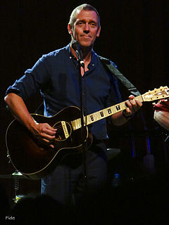
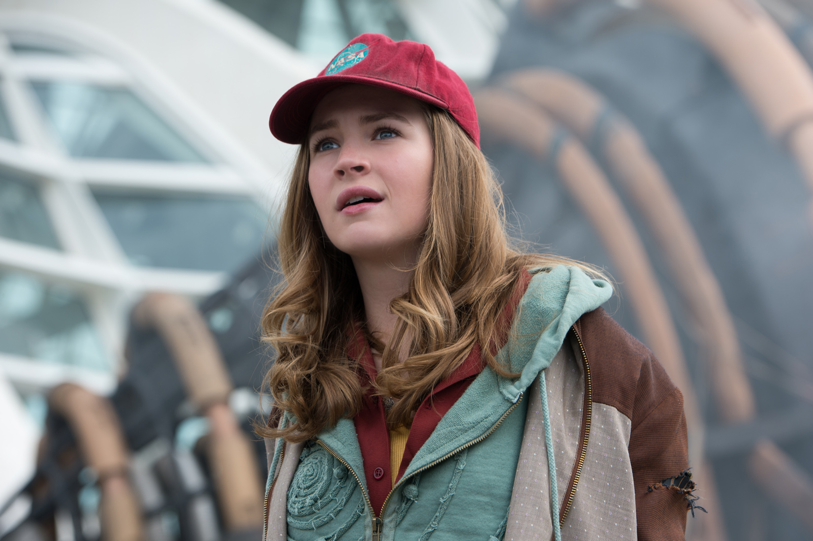
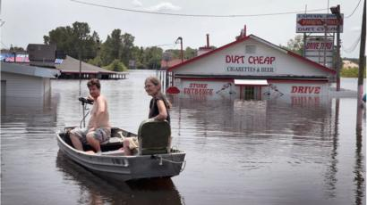
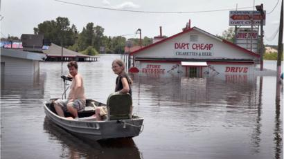

Título original: Tomorrowland
Estreno: 22 de mayo de 2015
Duración: 130 minutos
País: Estados Unidos
Dirección: Brad Bird
Guión: Damon Lindelof, Brad Bird, Jeff Jensen
Música: Michael Giacchino
Fotografía: Claudio Miranda
Género: Ciencia ficción. Aventuras | Robots
Productora: Coproducción Estados Unidos-España; Walt Disney Pictures / A113 / Babieka
Montaje: Walter Murch, Craig Wood
Vestuario: Jeffrey Kurland
Narrador: George Clooney, Britt Robertson
Calificación Cine PREMIERE: 4.5
Reparto: Britt Robertson, George Clooney, Raffey Cassidy, Hugh Laurie, Thomas Robinson, Tim McGraw, Kathryn Hahn,
Keegan-Michael Key, Pierce Gagnon, Judy Greer, Matthew MacCaull, Chris Bauer
DIRECTOR
Brad Bird

Animador estadounidense. Desde niño mostró dotes para el dibujo, perfeccionando su talento natural acudiendo al
Instituto de Arte de California.
Tras la conclusión de sus estudios, uno de sus primeros trabajos fue la colaboración en el departamento de
animación
de “Tod y Toby”, película de la Disney. También trabajó con Steven Lisberger en “Animalympics”, y con Martin Rose
en
“The Plague Dogs”.
Más tarde dirigió un episodio de la teleserie fantástica “Cuentos Asombrosos” y algunos episodios de “Los
Simpson”,
antes de dar inicio su acreditada carrera cinematográfica con “El Gigante De Hierro” (1999), adaptación de un
libro
de Ted Hughes. Esta película de la Warner que contó con Pete Townshend (miembro del grupo musical The Who) en
tareas
de producción, fue recibida con alabanzas a pesar de su escasa distribución.
Con Pixar y Disney colaboró en “Los Increíbles” (2004), historia de familia con superpoderes que le valió un Oscar
de Hollywood a la mejor película animada del año, y en “Ratatouille” (2007), película con el protagonismo de una
rata aspirante a chef.
Derivado de “Los Increíbles”, Brad filmó un corto titulado “Jack-Jack Attack”, y más tarde su secuela “Los
Increíbles 2” (2018).
Su primera película con actores reales fue “Misión Imposible: Procolo Fantasma” (2011), film de acción producido y
protagonizado por Tom Cruise. Más tarde rodó con George Clooney la película de ciencia-ficción “Tomorrowland”
(2014).
Su siguiente proyecto, ya fuera de Pixar/Disney, será “1906”, película ambientada en el terremoto de San Francisco
acontecido en el año que titula el film.
Brad está casado con Elizabeth Canney, con quien ha tenido tres hijos.
REPARTO
Tim McGraw
Tim McGraw nació el 1 de mayo de 1967 en Delhi, Luisiana, Estados Unidos. No sabía quién era su padre hasta que
encontró su partida de nacimiento en la que ponía, Frank McGraw, entrenador de béisbol, posteriormente adoptaría
su
apellido. Su padre era de ascendencia escocesa e irlandesa y su madre de ascendencia irlandesa e italiana. Cuando
era niño jugaba como pitcher (lanzador), bajo el nombre de Tug McGraw, tenía su tarjeta de jugador colgada en la
pared de su dormitorio, posteriormente descubrió que su entrenador era su padre. Pronunció un discurso al
graduarse
en el año 1985. Además es miembro de Pi Kappa Alpha Fraternity y tiene dos hermanas.
Se casó con la cantante Faith Hill el 6 de octubre de 1996, estando casados en la actualidad. El matrimonio ha
tenido tres hijos, Gracie Katherine (n. 1997), Maggie Elizabeth (n. 1998) y Audrey Caroline (n.2001). En 2007 la
prestigiosa revista Forbes estimó sus ganancias en dicho año alrededor de 37 millones de dólares. En el año 2009
lanzó al mercado su propia fragancia, bajo el nombre de "McGraw".
Kathryn Hahn
Natural de Illinois, Kathryn Hahn se crió en Cleveland, donde su familia se mudó siendo ella muy niña. Actriz
vocacional, Kathryn estudió arte dramático en la Northwestern University antes de ingresar en la prestigiosa
escuela
de drama de la Universidad de Yale. Avalada por una dilatada experiencia en el mundo del teatro, Hahn dio el salto
a
la gran pantalla en 2003, a punto de cumplir los 30, en la comedia Cómo perder a un chico en diez días. Su natural
talento para la comedia no pasó desapercibido, y Hollywood no tardó en considerarla como una de los suyos. Cimentó
su escalada al éxito con títulos como El chico de tu vida, El reportero o El amor es lo que tiene. Aunque ha
seguido
brillando en la pantalla grande con títulos como The Holiday, Revolutionary Road, Sácame del paraíso, El dictador,
Somos los Miller, La vida secreta de Walter Mitty, Ahí os quedáis, La visita, donde se pone a las órdenes de M.
Night Shyamalan, The D Train, Malas madres o Captain Fantastic, Hahn es muy conocida y admirada por el gran
público
a causa de su participación en las series Crossing Jordan y Transparent.
George Clooney
George Timothy Clooney (Lexington, Kentucky; 6 de mayo de 1961) es un actor, director, productor y guionista
estadounidense. Ha sido galardonado con cuatro Globos de Oro, dos Óscar y un BAFTA. También es conocido por su
activismo político, siendo Mensajero de la Paz de Naciones Unidas desde 2008, título al que renunció
posteriormente.
Fue nominado dos veces para los premios Emmy por su interpretación del Dr. Doug Ross en la galardonada serie de
televisión Urgencias. Gracias a ello, comenzó a interpretar varios papeles principales en películas como Batman y
Robin (1997) y Out of Sight (1998). En 1999, protagonizó junto a Mark Wahlberg, Ice Cube y Spike Jonze, la
película
Tres reyes, una bien recibida sátira de guerra ambientada durante la guerra del Golfo. En 2001, la popularidad de
Clooney creció gracias al que fue, hasta ahora, su mayor éxito comercial, Ocean's Eleven, la primera de la
trilogía,
siendo esta una adaptación de la película homónima de 1960, que protagonizaron la Rat Pack. Al año siguiente, hizo
su debut como director con el thriller biográfico Confesiones de una mente peligrosa.
Ganó un Óscar al mejor actor de reparto por su papel en la película Syriana (2005) y fue nominado como mejor actor
por sus interpretaciones en Michael Clayton (2007), Up in the Air (2009) y Los descendientes (2011). En 2013,
recibió por la producción de Argo el Óscar a la mejor película junto a Ben Affleck y Grant Heslov. Es la única
persona que ha sido nominada a los Óscar en seis categorías diferentes. En 2005, la revista TV Guide lo colocó
número uno en su lista de las "50 estrellas más atractivas de todos los tiempos".
La labor humanitaria que desempeña el actor incluye su defensa en la búsqueda de soluciones para el conflicto de
Darfur, la recaudación de fondos para los damnificados de los terremotos de Haití de 2010, el océano Índico de
2004
y de los atentados del 11 de septiembre de 2001, y la creación de documentales para crear conciencia sobre las
crisis internacionales como Sand and Sorrow. Además de su labor como mensajero en la ONU, es miembro del Council
on
Foreign Relations.
Britt Robertson
.jpg)
Brittany Leanna Robertson (Charlotte, Carolina del Norte; 18 de abril de 1990), más conocida como Britt Robertson,
es una actriz estadounidense. Comenzó a actuar de niña en el Greenville Little Theater en South Carolina e hizo su
debut en la pantalla como la versión más joven de Sheena en un episodio de Sheena en 2000. Al año siguiente hizo
una
aparición especial en Power Rangers Time Force y recibió una nominación al Young Artist Award por Mejor actuación
en
una película televisiva, miniserie o especial - Leading Young Actress por su papel en The Ghost Club (2003).
Robertson pasó a tener papeles en Growing Pains: Return of the Seavers (2004), Keeping Up with the Steins (2006),
Dan in Real Life (2007), The Tenth Circle (2008), Mother and Child (2009), Avalon High (2010), Scream 4 (2011) y
The
First Time (2011).
Robertson interpretó el papel principal de Lux Cassidy en la serie dramática Life Unexpected (2010–11), que fue
cancelada en su segunda temporada a pesar de las críticas positivas. También tuvo un papel principal en la serie
sobre drama adolescente sobrenatural The Secret Circle (2011–12), pero también fue cancelada después de su primera
temporada. En 2013, obtuvo un papel en el elenco principal de la serie de misterio de ciencia ficción Under the
Dome, que interpretó hasta 2014. Ella tuvo papeles posteriores en las películas tales como Delivery Man (2013) y
Ask
Me Anything (2014), para las cuales ella ganó el premio a la mejor actriz en Nashville Film Festival y fue
galardonada con el Premio del Festival de Cine de Boston a la Mejor Actriz de Reparto por su actuación en White
Rabbit (2013).
Robertson recibió un reconocimiento más amplio en 2015 después de obtener los papeles de Sophia Danko en The
Longest
Ride y Casey Newton en Tomorrowland. Para la primera, fue nominada para el Teen Choice Award por Choice Movie
Actress - Drama para la última, fue nominada para el Teen Choice Award for Choice Movie Actress – Sci-Fi/Fantasy.
En
2016, protagonizó las películas Mr. Church, junto a Eddie Murphy, y Mother's Day, junto a Jennifer Aniston y Julia
Roberts, y en 2017, protagonizó la película de ciencia ficción romántica The Space Between Us y en la película de
comedia dramática A Dog's Purpose. Ese mismo año, encabezó la serie original de Netflix, Girlboss, interpretando a
Sophia Amoruso.
Hugh Laurie

James Hugh Calum Laurie OBE (Oxford; 11 de junio de 1959), más conocido como Hugh Laurie, es un actor, humorista,
escritor, músico y cantante británico.
En televisión, es mundialmente conocido, principalmente, por su papel de Gregory House, protagonista de la serie
de
televisión House M. D. (2004-2012). Laurie ha conseguido gracias a esta el premio Globo de Oro al mejor actor
dramático en dos años consecutivos (2006 y 2007).
En cine, es conocido por interpretar al personaje de Frederick Little, en las películas infantiles Stuart Little,
Stuart Little 2 y Stuart Little 3, así como interpretar al villano Jasper en la película de Disney, en 1996, 101
Dalmatians.
En el mundo musical, forma parte de la banda benéfica Band From TV y en 2011 estrenó su primer trabajo musical Let
Them Talk.
Raffey Cassidy
Raffey Cassidy nació el 30 de agosto de 2002 en Worsley, en el condado de Gran Manchester, Inglaterra (Reino
Unido).
Ha participado como actriz en varias películas, entre las que se destaca Snow White and the Huntsman de Universal
Pictures en el año 2012 junto a Charlize Theron, Kristen Stewart, y Chris Hemsworth. También en 2012 trabajó en la
película de Tim Burton Sombras tenebrosas, con Johnny Depp para Warner Bros. En 2015, Cassidy interpretó a Molly
en
la película Molly Moon y el increíble libro del hipnotismo, producida por Amber Entertainment y actuando junto a
Emily Watson y Dominic Monaghan y en ese mismo año también interpretó a Athena, una niña robot, en la película
Tomorrowland, junto a George Clooney y Hugh Laurie.
En televisión, ha participado como actriz invitada en Mr. Selfridge, junto a Jeremy Piven.
En 2013 Cassidy fue seleccionada en la lista Stars of Tomorrow (Estrellas del mañana) que anualmente publica la
revista Screen International. Es la actriz más joven que ha sido seleccionada entre las ediciones anuales de la
lista.
TRAILER
FOTOS

En esta película, el gobernador de la utópica Tomorrowland, David Nix (Hugh Laurie), utiliza tecnología para echar
un vistazo al futuro, en el cual hay 1 en 10 posibilidades de que el mundo se acabe por culpa de la humanidad. Nix
utiliza entonces la misma tecnología para insertar el pesimismo en el imaginario colectivo, intentando hacer que
de
esta manera se active la sociedad contra el cambio climático.
Esto es lo mismo que hacen hoy cientos de expertos –e incluso actores como Harrison Ford– sin obtener una
respuesta
decidida de cambio por parte de sus interlocutores. Por ello, Nix sostiene un discurso estremecedor:
Si pudieras ver el futuro, y te asustase lo que ves, ¿qué harías con esa información? ¿Se lo dirías a quién?
¿Políticos? ¿Líderes de la industria? ¿Y cómo los convencerías? ¿Con datos, con hechos? Buena suerte. Los únicos
hechos que no ponen en duda son aquellos que mantienen la máquina en marcha y los dólares entrando en caja. Pero…
¿y
si hubiera alguna forma de saltarse al intermediario y meter esa noticia tan dramática directamente en la cabeza
de
todos?
Nix llega a la conclusión de que para salvar a la civilización, les debe mostrar su colapso. Y es lo que hace.
Pero
aun así, la gente no reacciona. Tal cosa sucede hoy en día: la ONU nos alerta sobre la necesidad de frenar con
urgencia el cambio climático para el año 2030, y no obstante, más que hacer algo al respecto, parece que nosotros
abrazamos ese apocalipsis, como dice Nix:
Su Tierra se derrumba a su alrededor. Tienen epidemias simultáneas de obesidad y hambruna, ¿cómo explicas eso? Las
abejas y las mariposas empiezan a desaparecer, los glaciares se derriten, las algas aparecen por todas partes, los
canarios de las minas se están cayendo muertos, y no se quieren enterar. En todo momento existe la posibilidad de
un
futuro mejor, pero ustedes no se lo creen, y como no se lo creen no hacen lo necesario para que se haga realidad.
Nix concluye diciendo que nos resignamos por una razón: porque el futuro apocalíptico no pide nada de nosotros.
VIDEOS
Sin lugar a duda, el cambio climático es un concepto sumamente controversial y debatido contemporáneamente y no
puede ser ignorado o pasado de alto.
¿Es causado por el hombre o es por factores naturales?
En la monografía se detallarán ambas corrientes de la manera más objetiva posible con el fin de que el lector
pueda
comprender de qué se trata cada una y, también, se vea condicionado para sentirse representado por el pensamiento
de
alguna de las dos posturas.
Ser consciente de lo que está pasando con los altos niveles de contaminación es fundamental y cada uno de nosotros
debe tomar medidas al respecto. Buscar reducir la contaminación para volver al planeta Tierra un territorio más
sustentable y para que las futuras generaciones puedan, de hecho, sobrevivir. Se debe fomentar la idea de que con
el
aporte de un “pequeño granito de arena” de cada uno de nosotros se pueden generar grandes resultados y cambios, y,
por lo tanto, abandonar la postura de esperar siempre que los demás hagan el cambio por nosotros.
El planeta nos necesita.
Introducción
¿Qué es el «cambio climático», o para algunos «calentamiento global»? Concretamente, es el resultado de procesos
industriales, contaminantes y químicos. Se basa en la liberación de gases de efecto invernadero (CO2) a la
atmósfera, producto de la quema de combustibles fósiles tales como el carbón, el petróleo y el gas. Resulta de
suma
importancia destacar la existencia de una segunda corriente de pensamiento que atribuye dicha causa a meros
procesos
naturales terrestres, es decir, dejando la justificación de responsabilidad de la acción humana de lado.
A lo largo del desarrollo del trabajo, se profundizará cada una de las dos vertientes explicando sus diferencias,
su
historia, quiénes las apoyan, el respaldo teórico con el que cuentan y sus opiniones acerca de la corriente
contraria ya que el abordaje del tema se encuentra en una zona turbulenta, de discordia. Las respectivas hipótesis
son irreconciliables, son contrarias y algunas de ellas, en cierto modo, hasta polémicas. Han sido generadoras de
grandes tratados internacionales y de grandes debates también, llegando a ocasionar una brecha de pensamiento a
nivel mundial. Al final, se hará una breve conclusión y se mencionará las principales consecuencias que este
suceso
trae consigo.
¿Cómo denominar este proceso? Primero, presentamos la definición del «cambio climático» que alude a un cambio
duradero y también significativo en los patrones globales del clima. En este concepto, las razones descansan en
cuestiones naturales como la energía del sol, erupciones volcánicas, procesos bióticos o bien por la actividad
humana. Y cuando nos centramos en esta última razón, nos aproximamos a nuestra segunda definición llamada
«calentamiento global». Ésta refiere al aumento de la temperatura terrestre que, se cree, tiene como principal
responsable a la intervención del hombre. Anteriormente, se introdujo a las dos principales corrientes de
pensamiento. Una de ellas, quien atribuye la responsabilidad a factores naturales, lógicamente subestima o incluso
llega a negar la existencia del calentamiento global. Son los principales promotores del abandono de dicho término
y
del alojo del concepto de Cambio Climático en su lugar. El calentamiento tal vez pueda sonar muy fuerte para
ellos,
pero es una realidad innegable y pongo en duda que el mero acto de acuñar un término diferente logre persuadir o
alivianar la realidad del asunto, si es que ese es su verdadero fin.
Cambio climático como resultado de la actividad humana
Comenzaremos por desarrollar nuestra primera corriente, cuya explicación para este fenómeno recae en el conocido
efecto invernadero, liberando CO2 contaminante para la atmósfera tal y como se explica en la introducción. Los
respectivos pensadores y científicos que apoyan esta teoría no niegan la realidad de que existe un cierto grado de
cambio en el clima a través del tiempo que es producto de cuestiones y procesos naturales, pero ven a la situación
actual más drástica que eso.
El Summary for Policymakers of the 5th report del IPCC (Intergovern-mental Panel
on
Climate Change) publicado en octubre de 2013 enuncia: «El calentamiento del sistema climático es inequívoco, y
desde
la década de los cincuenta, muchos de los cambios observados no tienen precedentes en decenas de miles de años. La
atmósfera y los océanos se han calentado, las cantidades de hielo y nieve han disminuido, el nivel del mar ha
aumentado, y las concentraciones de los gases de efecto invernadero han aumentado«. Entonces… ¿A qué época se
remonta la pronunciación de este problema?, ¿Cuándo comenzó a aumentar fuertemente la temperatura global?, ¿A qué
factores se debió?, ¿Cuándo nació la preocupación y el interés público por este problema?
Comienzos.
El mayor «punto de inflexión», o el «antes y el después» que marcó el pronunciamiento del cambio climático se ve a
partir de la revolución industrial en el siglo XVIII. Las concentraciones de CO2 y metano se vieron aumentadas en
un
36% y 148 % respectivamente desde 1750, niveles notablemente superiores a lo antes registrado a lo largo de la
historia. El número de habitantes en la tierra era cada vez mayor y sus necesidades de consumir también aumentaban
desmesuradamente. Por lo tanto, este crecimiento demográfico vino de la mano de la explotación de grandes campos
de
tierra y del surgimiento de innovaciones tecnológicas que culminarán en instalaciones de nuevas industrias. Esto
que, supone facilitar el trabajo a los trabajadores y reducir costos a los empresarios, conlleva la necesidad de
combustibles fósiles (gas, carbón y petróleo) para la energía requerida en cada maquinaria. Pero esto es un arma
de
doble filo ya que, lamentablemente, no produce sólo beneficios. La quema de estos combustibles será generadora de
grandes cantidades de «gases invisibles» que llegarán a la atmósfera (se estipula que son responsables en unas ¾
partes de los gases invernadero) la cual se ha vuelto más densa e implica un aire más caliente. Por lo tanto, el
deterioro de la capa de ozono encargada de filtrar gran parte de los rayos ultravioletas procedentes del sol surge
de la producción de energía para las maquinarias, del «smoke» de ellas y de sus desechos, de la sobreexplotación
del
suelo, el mantenimiento de animales para consumo y de la gran tala de bosques, entre otras explicaciones.
Sucesos importantes.
De todas formas, las preocupaciones por el medio ambiente fueron un resultado tardío de este desarrollo
capitalista.
Al principio, tomaron formas locales ligadas a aquellas ramas de las industrias donde los efectos eran fuertemente
visibles e impactantes. Pero la realidad es que cada vez eran más los acontecimientos catastróficos que esto
produce, tornando la cuestión ambiental en un problema sistémico e incrementándose los movimientos contestatarios.
Sucesos tales como: el desastre de Chernóbil (1986), el de Bhopal (1984), el accidente nuclear de Fukushima
(2011),
los incendios petroleros de Kuwait (1991), el derrame del Golfo de México (2010), derrame petrolero del buque
Exxon
Valdez en Alaska (1989), la desaparición del mar de Aral, la nube tóxica de Séveso (1976), por mencionar sólo
algunos.
Respuestas que se han dado.
Dichas preocupaciones se vieron reflejadas de distintas formas. Entre ellas, reacciones populares como el
manifiesto
Negawatt, Derecho a la oscuridad. También generó iniciativas internacionales Estatales como ONU – PNUMA, Agenda
del
G-20, Finanzas sostenibles, COP Acuerdo de Paris, Protocolo de Kyoto, Convención Marco de las Naciones Unidas
sobre
el Cambio Climático (CMNUCC). Asimismo, iniciativas globales de Green Climate Fund (GCF), Climate Bonds Initiative
Sustainable Banking Network (SBN), Sustainable Insurance Policy Forum The Green Infrastructure Investment
Coalition
(GIIC), The Principles for Responsible Investment (PRI), The Principles for Sustainable Insurance(PSI), The Carbon
Pricing Leadership Coalition, The G7 Carbon Market Platform, entre otras.
Medidas para frenarlo.
El cambio climático es un problema ecológico mundial del que cada vez menos gente duda. Incluso uno de los
portavoces del eco-escepticismo, Bjørn Lomborg, ha reconocido su gravedad y ha solicitado a los gobiernos que
actúen. Las medidas para frenarlo y adaptarse a sus consecuencias son muy diversas. Además de servir contra el
problema, estas iniciativas contribuyen a crear un mundo mejor.
Todos, desde las instituciones internacionales hasta las locales, y los consumidores, pueden contribuir a ello
aplicando a sus vidas cotidianas diferentes acciones tales como: la utilización de energías renovables (paneles
solares o fotovoltaicos, biocombustibles para el automóvil,..), el ahorro/no derroche de la energía (ir a pie, a
bicicleta o en transporte público, bombillas de bajo consumo, electrodomésticos de tipo A o superior, regular la
calefacción, apagar televisores y computadoras en desuso…), o contribuir con la preservación de bosques (plantando
árboles, no derrochar papeles, reciclar…).
En cuanto a las pequeñas instituciones, no hay que subestimar su poder a reducir este problema. Tal como dice el
Ministerio de medio ambiente, rural y marino de España MARM, «las comunidades autónomas y los ayuntamientos pueden
contribuir hasta en un 40% en el cumplimiento de los objetivos fijados por el Gobierno para reducir las emisiones
contaminantes de CO2.» Pueden hacerlo a través de proyectos que incrementen la eficiencia energética, gestionar
los
deshechos para reducir los niveles de contaminación, reciclar, usar energías renovables, entre otras.
Las preocupaciones por lo que esto conlleva crecen, y también lo hacen las medidas basadas en la aplicación de
nuevas tecnologías. Existe la geoingeniería que tiene como objetivo lograr controlar el clima a voluntad. Lo hace
a
través de distintos métodos, como por ejemplo fabricar árboles artificiales o crear nubes con sal marina. Otro
avance tecnológico utilizado con el mismo fin es el sistema de captura y almacenamiento de CO2, que sirve
justamente
para capturar dicho gas donde es generado, para luego transportarlo bajo tierra.
Aunque existen expertos quienes no confían en estos sistemas debido a sus posibles consecuencias negativas,
volviéndolos no viables o inseguros. Proponen, en cambio, destinar esas grandes sumas de dinero hacia otro tipo de
tecnologías más ecológicas y más seguras.
Opinión sobre la corriente escéptica.
El desprestigio a la teoría de calentamiento global como producto del comportamiento humano es, principalmente,
promovida por grandes petroleras y otras compañías, que ven amenazados sus mercados frente a este activismo
ecológico. Tomar medidas ecológicamente sustentables les implicaría realizar mayores inversiones para no
contaminar,
no arrojar residuos a la naturaleza y reducir sus niveles de producción que contaminan el medio ambiente, además
de
que esto «ensucia» sus imágenes.
Se trata de un sistema donde el sector beneficiado de la revolución industrial tiene mayor inferencia. En el
siguiente mapa se muestra cómo en las regiones de los países más industrializados (hemisferio norte) se localiza
la
mayor concentración de emisión de CO2.
Es frecuente oír voces que comparen a los científicos negacionistas de los efectos del tabaco –en su momento- con
los que niegan el cambio climático. Pero se considera que estos científicos son pagados. Se estipula una suma de
mil
millones de dólares anuales es invertida en organizaciones estadounidenses que se dedican asiduamente a combatir
la
información correcta sobre el cambio climático.
Dichos financiamientos vienen de la mano de petroleras y de ciertos gobiernos con el fin de negarse a firmar
tratados internacionales que limiten la cantidad de producciones contaminantes que puedan realizar.
Cambio climático como resultado natural
Como se describe al comienzo, en este sector se explicará aquella corriente que acredita los cambios en la
temperatura a meros factores naturales. En este caso, se sostiene que el sistema climático es altamente insensible
a
las emisiones de gases de efecto invernadero de la humanidad y a la contaminación por aerosoles. Es más bien,
producto del mismo sistema climático. Se explica a través de la Oscilación del Pacífico, que refiere a un patrón
de
temperatura en el océano Pacífico. Dura aproximadamente dos décadas estando en fase fría y luego en fase cálida y
es
un ciclo climático completamente natural. Entonces, «Las fluctuaciones caóticas o pequeñas en los sistemas de
circulación atmosférica y oceánica pueden causar pequeños cambios en la nubosidad media global. […] El cambio
climático sucede con o sin nuestra ayuda«. (Roy Spencer, Phd climatólogo y ex miembro de la NASA, 2016).
Explicaciones alternativas.
Científicos han registrado en todo el mundo cómo el metano fue aumentando significativamente en diez años. Este
gas
también es responsable del efecto invernadero y es importante decir que no se producen cantidades significativas
por
el hombre. Además, el hecho de que el gas se haya propagado de forma simultánea en todo el mundo desmiente que la
responsabilidad de este suceso recaiga en los países más industrializados. Se habla de un aumento del gas de
varios
millones de toneladas en la atmósfera, teniendo un efecto bastante mayor al del dióxido de carbono. La explicación
recae en que la reflexión que tiene de la luz solar de vuelta a la tierra es lo que produce el calentamiento
global.
Otra razón que brinda esta voz es el hecho de que las emisiones de dióxido de carbono generadas por la actividad
humana constituyen menos del 0.00022% del total liberado por el planeta a lo largo de la historia geológica.
Además,
se ha registrado mayores temperaturas 800 años antes del aumento de CO2 en la atmósfera. Entonces, el promedio de
la
temperatura del planeta es completamente consistente con las tendencias naturales de variaciones climáticas.
Asimismo, se argumenta que desde un punto de vista paleo-climatológico, nos encontramos en un período de
calentamiento natural. Se habla de un fenómeno climatológico cíclico. Hemos pasado por fases de enfriamiento,
donde
los glaciares han adquirido mayor volumen, y fases de calentamiento, como en la que nos encontramos ahora. Por lo
tanto, la Oscilación del Pacífico es fundamental a la hora de ver las causas del cambio en la temperatura, para
estos científicos.
Las variaciones solares modifican la temperatura en la Tierra a través del flujo de radiación que emana. El sol,
además, aumenta su luminosidad a través de los años (aunque a paso lento). También la órbita de la tierra y las
corrientes oceánicas son consideradas como factores reguladores del clima, actúan como moderadoras y suavizan las
temperaturas en ciertas regiones.
Opinión sobre la corriente antrópica.
Se sostiene que todo el ruido generado en torno al calentamiento global pertenece a una agenda que tiene como fin
beneficiar un nuevo tipo de mercado –el mercado verde- y beneficiarse, de este modo, económica y financieramente.
Líderes de opinión anticalentamiento global han lucrado de forma millonaria gracias al posicionar dicho tópico a
la
agenda internacional.
Se argumenta que es fácil de contradecir debido a que no hay suficientes datos globales que puedan registrar
períodos de tiempo lo suficientemente largos como para asegurar la existencia de mecanismos naturales de
calentamiento. De todas formas, tampoco existe prueba científica concreta que demuestre que el calentamiento
global
realmente es producido por las emisiones de dióxido de carbono producto de la actividad humana.
Otras entidades, como Donald Trump, consideran que este problema fue creado por China con el fin de despojar el
poderío económico que Estados Unidos tiene, y volverlo un actor no-competitivo. O Vladimir Putin, que dice que es
un
invento producto del temor a los países más poderosos como Rusia.
Lo que se ha visto a lo largo de los últimos 15 años en cuanto al concepto de cambio climático, ha sido altamente
tergiversado con todo el «bombardeo» de los medios de comunicación, quienes tienen un alto poder de formación de
pensamientos e imagen. Por ejemplo, los escándalos de las imprecisiones de investigaciones que se han hecho, como
la
de la Universidad de East Anglia, donde cierta data fue eliminada para favorecer el hecho de que el cambio
climático
tenía que ser sólo abocado a la culpabilidad del hombre.
También se habla por una presión por parte de gobiernos o por parte de agrupaciones ambientalistas, que tratan de
hacer ver el calentamiento global como el peor de los males, con la intención de beneficiarse únicamente
monetariamente.
Conclusiones
Creo necesario recaer en una explicación conjunta a este suceso. No negaré que es producto de fenómenos naturales,
pero tampoco negaré que es un hecho acelerado por el hombre. Y esta última razón tiene un peso considerable ya que
los niveles de contaminación y deforestación que se da son cada vez mayores y, si bien existen tratados y
organismos
que buscan reducir estos efectos, las voces de los negacionistas contrarrestan la lucha que se lleva a cabo.
Un segundo comentario para agregar es que, los organismos que financian científicos o medios de comunicación para
beneficiarse a sí mismos y a sus mercados, existen en ambas corrientes de pensamiento y ese es un hecho innegable.
Si se busca objetividad, no se puede considerar a uno de los bandos puramente altruista, en la totalidad de los
sectores y grupos que lo compone. Pero sí hay una realidad, y es que la contaminación está acabando con el
bienestar
de la vida. Y en unos años ni el terrorismo, ni violencia armada ni armas nucleares importaran, porque no habrá
como
respirar. El aumento de la temperatura y esta puede traer consecuencias graves si no se le trae un freno, como:
- El ascenso del nivel del mar. El agua se expande cuando se calienta y los océanos absorben más calor que la
tierra.
- El nivel del mar aumentará también debido a la fusión de los glaciares y del hielo marino.
- Ciudades enteras se verán sumergidas debido a las inundaciones.
- Lugares en los que normalmente llueve o nieva mucho podrían calentarse y secarse.
- Lagos y ríos podrían secarse.
- Habría más sequías por lo que se haría más difícil cultivar.
- Habría menos agua disponible para la agricultura, la producción de comida, para beber o para ducharse, o para
cualquier otro uso que se le dé al agua.
- Muchas plantas y especies de animales se extinguirían.
- Huracanes, tornados y tormentas producidos por cambios de temperatura y evaporación de agua se producirían con
más regularidad.
 
